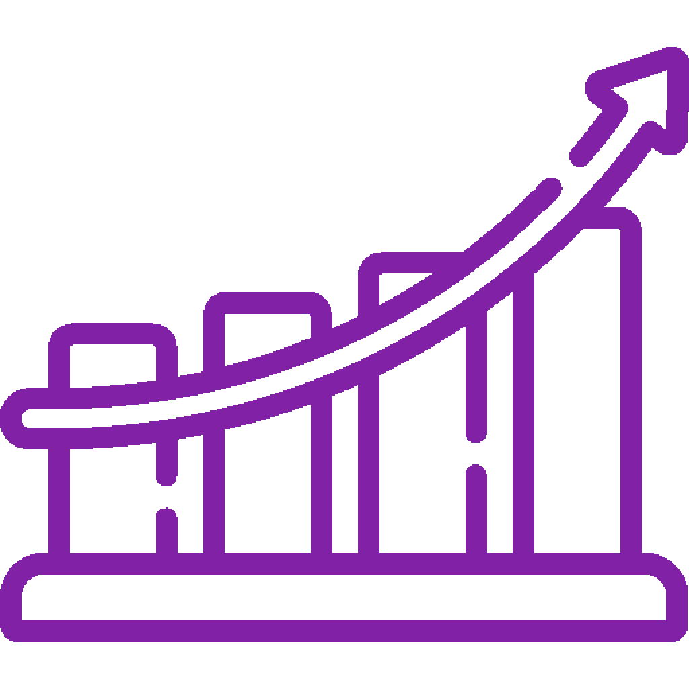

Sprint backlog
Sprint Backlog é uma lista de tarefas que o Time de Desenvolvimento deve realizar durante uma sprint, que é um período de tempo curto e definido em metodologias ágeis de desenvolvimento de software, como o Scrum. Essa lista é criada a partir dos itens do Product Backlog que foram priorizados para o sprint em questão.O Sprint Backlog é uma ferramenta essencial para o Scrum, pois permite que o Time de Desenvolvimento tenha uma visão clara das tarefas a serem realizadas durante o sprint, facilitando o planejamento, execução e acompanhamento do trabalho. Além disso, o Sprint Backlog é atualizado diariamente durante a reunião diária (Daily Scrum), permitindo que o time ajuste as tarefas de acordo com as necessidades e mudanças que surgirem durante o sprint.


Product Backlog
Product Backlog é uma lista de itens priorizados que descrevem as funcionalidades e requisitos de um produto a ser desenvolvido em metodologias ágeis de desenvolvimento de software, como o Scrum. Cada item é descrito por meio de user stories, que são narrativas curtas e simples que descrevem o que o usuário deseja e o que o produto deve fazer para atender a essa necessidade. As user stories podem ser alteradas durante o projeto, já que a metodologia ágil prevê a adaptação às mudanças e necessidades do cliente. Por isso, o Product Backlog é considerado um documento vivo e dinâmico, que pode ser atualizado a qualquer momento de acordo com as mudanças de prioridades e necessidades do cliente. Essa flexibilidade permite que o produto final atenda de forma mais eficiente às necessidades e expectativas do cliente. Além disso, é importante ressaltar que o Product Owner é responsável por gerenciar o Product Backlog e garantir que as alterações sejam feitas de forma estratégica e organizada, levando em consideração o impacto das mudanças nas entregas e no prazo do projeto. O objetivo é manter o Product Backlog sempre atualizado e alinhado com a visão e estratégia do produto, garantindo que o produto atenda às necessidades do cliente de forma eficaz.Burndown Chart
Burndown Chart é uma ferramenta gráfica utilizada em metodologias ágeis de desenvolvimento de software, como o Scrum, para medir e acompanhar o progresso do Time de Desenvolvimento em relação às metas estabelecidas para o sprint. O gráfico mostra a quantidade de trabalho que ainda precisa ser realizado, comparando com o tempo disponível para conclusão do sprint. Através do Burndown Chart, é possível visualizar a evolução do trabalho, identificar possíveis atrasos e planejar as atividades que ainda precisam ser realizadas. Ele também ajuda o Time de Desenvolvimento a manter o foco nas tarefas mais importantes e a tomar decisões de forma mais eficiente, permitindo que o sprint seja concluído com sucesso. O Burndown Chart é atualizado diariamente pelo DevTeam, de forma que ele possa monitorar seu progresso em relação às metas estabelecidas para o sprint. Dessa forma, ele se torna uma ferramenta importante para o gerenciamento do tempo e a tomada de decisões eficientes durante o desenvolvimento do produto.